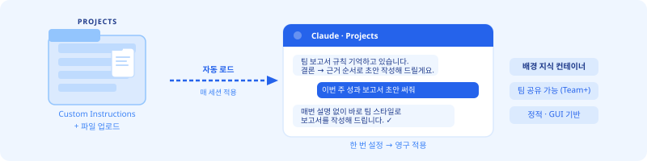
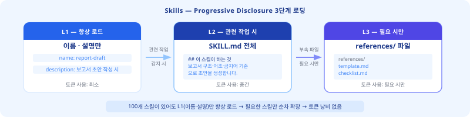
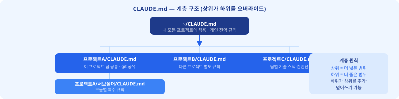
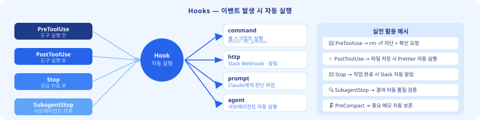
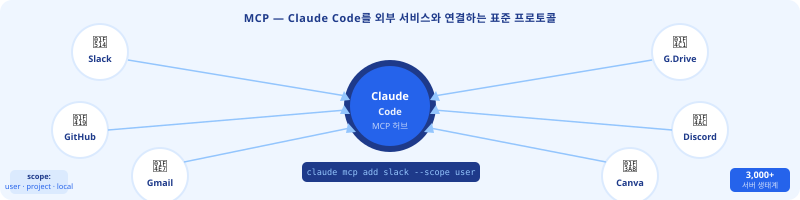
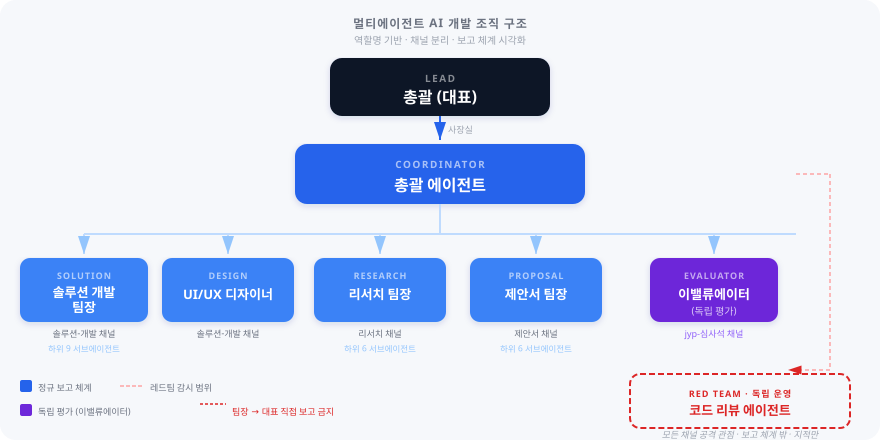

Projects · Skills · CLAUDE.md · Hooks · Subagents · MCP
오늘 배운 기능 하나로 팀 전체 생산성이 달라집니다.
| 기능 | 내용 |
|---|---|
| Custom Instructions | 회사 용어·스타일·금지어 → 모든 대화 자동 적용 |
| 파일 업로드 | PDF·Word·Excel → 세션마다 자동 참조 |
| 팀 공유 | Team·Enterprise: 팀원 공유 프로젝트 가능 |
| 한계 | 정적 — 도구 실행·자동화 불가 Skills 담당 |
claude.ai 접속 → 좌측 Projects 클릭Custom Instructions 탭 선택
## 우리 팀 글쓰기 규칙 - 모든 보고서: "결론 먼저, 근거 나중" - 문장은 2줄 이내로 끊기 - "~한 것 같습니다" 금지 → "~입니다" ## 금지 표현 - "많은" 금지 → 구체적 숫자로 - 번역투 금지: "~함에 따라"
Skills 탭 클릭weekly-report

| 위치 | 적용 범위 | Git 공유 |
|---|---|---|
~/CLAUDE.md | 내 모든 프로젝트 | 개인용 |
프로젝트/CLAUDE.md | 이 프로젝트만 | 팀 공유 |
서브폴더/CLAUDE.md | 이 폴더에서만 | 개인용 |
# 프로젝트 설정 ## 기술 스택 (변경 불가) - 런타임: Node.js + Express - DB: SQLite → RDS MySQL - 절대 사용 금지: React, Vue, Tailwind ## 코딩 규칙 - 주석 최소화 - 보안: helmet + express-rate-limit ## 팀 컨벤션 - 커밋: [feat/fix/refactor]: 한 줄 요약 - 시간 표기: KST 기준
CLAUDE.md 파일 생성 → 기술 스택·금지 항목·팀 컨벤션 작성 → git commit → 팀 전체 적용 완료..claude/skills/ ├── code-review/ │ ├── SKILL.md ← 코드 리뷰 지침 │ └── checklist.md ├── deploy-guide/ │ └── SKILL.md └── report-draft/ └── SKILL.md
.claude/skills/ 폴더에 파일로 존재/report-draft)
| 이벤트 타입 | 발생 시점 | 대표 활용 |
|---|---|---|
PreToolUse | 도구 실행 직전 | 위험 명령어 차단·승인 요청 |
PostToolUse | 도구 실행 직후 | Lint·테스트 자동 실행 |
Stop | Claude 응답 완료 | Slack·Discord 자동 알림 |
SubagentStop | 서브에이전트 완료 | 결과 자동 후처리 |
rm -rf /를 실행해도 막을 방법이 없습니다. PreToolUse Hook에 위험 패턴 감지 스크립트 하나만 달면 실행 전에 자동 차단됩니다."hooks": { "PreToolUse": [{ "matcher": "Bash", "hooks": [{ "type": "command", "command": "echo $CLAUDE_TOOL_INPUT | grep -i 'rm -rf' && echo '🔴 위험 명령어 감지!' || true" }] }], "Stop": [{ "hooks": [{ "type": "http", "url": "https://hooks.slack.com/your-webhook-url", "method": "POST" }] }] }
.claude/settings.json 파일에 "hooks" 키를 추가합니다. Claude Code를 재시작하면 즉시 적용됩니다.
| 핸들러 타입 | 하는 일 | 대표 활용 |
|---|---|---|
command | 쉘 명령어 실행 | Lint·테스트·파일 로그 기록 |
http | URL로 POST 웹훅 | Slack·Discord·Teams 알림 |
prompt | Claude에 추가 지시 | 삭제 전 "정말 실행?" 확인 |
agent | 서브에이전트 실행 | 완료 후 자동 코드 리뷰 |
.claude/settings.json 열기 ② "hooks":{"Stop":[{"hooks":[{"type":"command","command":"echo 완료!"}]}]} 추가 ③ Claude Code 재시작 ④ 작업 지시 후 알림 확인| 특징 | 설명 |
|---|---|
| 독립 컨텍스트 | 메인 대화 오염 없이 대용량 작업 처리 |
| 병렬 실행 | 여러 에이전트 동시 실행 → 속도 향상 |
| 최소 권한 | 역할별 필요한 도구만 부여 → 안전성 |
| 격리 모드 | isolation: "worktree" → 안전한 실험 |
.claude/agents/code-reviewer.md 작성 → 코드 리뷰 전문 에이전트 설계 → 실제 파일로 테스트// 단일 에이전트 Agent({ description: "코드 리뷰", prompt: "auth.js 보안 검토", subagent_type: "code-reviewer" }) // 병렬 에이전트 (동시 실행) Agent({ prompt: "프론트엔드 분석" }) Agent({ prompt: "백엔드 분석" }) Agent({ prompt: "DB 스키마 분석" }) // → 3개 동시 실행, 결과 취합

# scope: user | project | local claude mcp add slack --scope user claude mcp add github --scope project claude mcp add discord --scope project
| 서비스 | 실전 활용 |
|---|---|
| 💬 Discord / Slack | 작업 완료 → 채널 자동 보고 |
| 🐙 GitHub | 이슈 자동 관리 · PR 리뷰 |
| 📁 Google Drive | 보고서 → 팀 드라이브 자동 저장 |
| 📧 Gmail | 완성 문서 → 고객사 자동 발송 |
| 🎨 Canva | 콘텐츠 → 발표자료 자동 생성 |

| 단계 | 조건 |
|---|---|
| 합의서 작성 | 작업 범위·기준 합의 → 착수 |
| 이밸류에이터 채점 | 합격선 95점+ 통과 |
| Gate 보고 | 총괄 에이전트에게 보고 |
| 최종 컨펌 | 컨펌 후에만 다음 Phase |
| 서비스 | 실제 흐름 |
|---|---|
| 💬 Discord | 세션 시작 → 채널 메시지 자동 fetch → 지시 파악 → 보고 전송 |
| 🎨 Canva | 교육 콘텐츠 완성 → 발표자료 자동 생성 |
| 📧 Gmail | 보고서 완성 → 고객사 자동 이메일 |
| # | 시나리오 | 난이도 | 기능 |
|---|---|---|---|
| 1 | 내 팀 주간 보고서 자동화 시스템 | ⭐⭐ | Projects + Skills |
| 2 | 코드 리뷰 자동화 Hook + 서브에이전트 | ⭐⭐⭐ | Hooks + Subagents |
| 3 | GitHub MCP 연동 이슈 관리 대시보드 | ⭐⭐⭐ | MCP + CLAUDE.md |
| 4 | 팀 온보딩 교안 자동 생성 시스템 | ⭐⭐ | Skills + Subagents |
| 5 | 내부 보고 체계 자동화 (Slack/Discord 알림) | ⭐⭐⭐ | MCP + Hooks |
| 기능 | 핵심 한 줄 | 바로 쓸 수 있는 곳 |
|---|---|---|
| Projects | 배경 지식 영구 주입 | 팀 보고서·이메일 일관성 |
| Skills | 업무 전문 능력 추가 장착 | 주간 보고서·회의록 자동화 |
| CLAUDE.md | 팀 규칙 한 번 → 영구 적용 | 기술 스택·코딩 규칙 일관성 |
| Hooks | 이벤트 발생 시 자동 실행 | Lint 자동화·Slack 알림 |
| Subagents | 독립 컨텍스트 전문 위임 | 대용량 문서 분석·코드 리뷰 |
| MCP | 외부 서비스와 Claude 연결 | GitHub·Slack·Drive 자동화 |